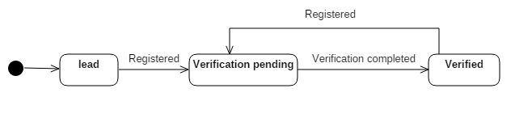

Models¶
List of database models (MySQL & MongoDb) for accounts app.
-
class
accounts.models.RegisteredUser(*args, **kwargs)[source]¶ Extension of django
django.contrib.auth.models.Usermodel that maintains all public user information. For every public user, a record is created with reference to ‘User’ model along with other attributes such as mode of registration, user personal settings etc.Points:
This model does not include any staff users.
Username of these users is the mobile phone no with country code as prefix. Example: +919999999999
All login related process such as session allocation etc are done using traditional django ‘User’ model whereas other business related functionality are done using this model.
Detailed personal information are not kept in this model. It only contains basic information only such as name, email id.
Registration methods:
- Website (Only one time): User can register directly on website using mobile no.
- Mobile app (Multiple times): User can register using mobile app.
- Enterprise app (Only one time): Passive registration of the user that is automatically created as a lead while using enterprise app. The account remains inactive until user register himself manually using any of the methods. Only one time record is created and ignore in further cases.
For registration flow, refer the document.
Registration can be multiple times. Only last registration information is kept for now.
State chart diagram for state machine:
Warning
This model must not trigger any update to django ‘User’ model since it can trigger model’s save. However, you can update this model without any intervention of ‘User’ model.
Authors: Gagandeep Singh
-
static
construct_username(country_tel_code, mobile_no)[source]¶ Static method to create actual database username by concatenating country telephone code and 10-digit mobile number
Parameters: - country_tel_code – Country telephone code
- mobile_no – 10-digit mobile number
Returns: Actual username; ‘<country_tel_code>+<mobile_no>’
Authors: Gagandeep Singh
-
classmethod
post_save(sender, instance, **kwargs)[source]¶ Post save trigger for this model. This will be called after the record has been created or updated.
Authors: Gagandeep Singh
-
set_password(new_password, send_owls=True)[source]¶ Method to set a registered user password and save it. This also sends any owls (Email or SMS) if required. Any owls related errors are silently ignored.
Parameters: - new_password – New password
- send_owls – Set True to send mail/SMS to the user. Default:True
Returns: None
Note
To prevent logout, execute following after this function.
>>> auth.update_session_auth_hash(request, user)
Warning
This method does not confirm with old password. Please confirm old password before changing as per your use case for security reasons.
Authors: Gagandeep Singh
-
class
accounts.models.UserProfile(*args, **values)[source]¶ Mongodb model to store registered user information. This model includes wide variety of user related attributes.
Attribute organisation: User attributes and their values are organised in two ways; dictionary and list. This is done to provide query optimization for wide use cases.
Dictionary: Attributes are maintained as key-value pair in a dictionary field ‘attributes’. Use this field for quick value lookup mostly when attribute name is known. Also in case of report display, use this field to get attribute values.
- Contains only currently active attributes for the user.
- Read-only field. Do not write/delete inside this field. It is overridden by save().
- This field is not indexed, since dictionary indexing does not perform well.
- So, NEVER use this field for complex query, aggregations or map-reduce.
List of objects: Attributes are also maintained in form of list of objects in the field ‘list_attributes’, with each object in the list representing one attribute having information such as name, value as well as other meta information such as active, last updated on etc.
- Contains all active & inactive fields.
- Save uses this field to populate ‘attributes’ field.
- This field is indexed on name, value & active field of the objects across all documents in UserProfile.
- Always use this field for complex queries and aggregation.
- While using MongoDb aggregation framework, unwind list_attributes before aggregating.
- Map-Reduce might not take good advantage of this field since unwind is not available for MongoDb M-R.
Adding/updating new attribute:
Always add or update attribute using ‘list_attributes’ field only. DO NOT use ‘attributes’ field. This is because save function will truncate ‘attributes’ field, loop over ‘list_attributes’ and add only active attributes to ‘attributes’ field.
Use of
add_update_attribute()is recommended.Deleting attribute:
Always use ‘list_attributes’ field but NEVER delete any entry. TO delete an attribute, mark that attribute as
active=False. Save function will automatically remove it from ‘attributes’ field. To revive an attribute, override its value and markactive=True.Use of
delete_attribute()is recommended.Mandatory attributes:
All attributes in UserAttributes embedded document tagged asrequired=Trueare mandatory and must be present in ‘list_attributes’. Model will not save until all required fields have values.When this model is created/updated:
This model is created only during registration process and updated each timeaccounts.models.RegisteredUseris saved.Authors: Gagandeep Singh
-
class
DetailedAttribute(*args, **kwargs)[source]¶ Mongodb embedded document to store an attribute in detail. This not only includes attribute name and value, but also other meta information such as active, last_updated_on etc.
Warning
Do not delete this record. Simply mark active as false.
Authors: Gagandeep Singh
-
class
UserProfile.UserAttributes(*args, **kwargs)[source]¶ Mongodb embedded document for
accounts.models.UserProfilemodel. It is this document that stores user attributes in key-value pairs.Note
Use this model for quick lookup for attribute value. These keys will not be indexed so DO NOT use them in queries.
Warning
- Following attributes will be replaced by that in
django.contrib.auth.models.Usermodel: - first_name
- last_name
Authors: Gagandeep Singh
- Following attributes will be replaced by that in
-
UserProfile.add_update_attribute(name, value, auto_save=True)[source]¶ Method to add new attribute if it does not exists or update an attribute if it is not locked. An attribute will automatically be revived if found inactive.
Parameters: - name – Name of the attribute.
- value – Value for that attribute.
- auto_save – True to write to db after addition else False
Returns: Bool tuple (is_new, updated) ‘is_new’: True if attribute was created. ‘updated’: True if action was success else False
Note: Throws ‘ValidationError’ if attribute is locked
Authors: Gagandeep Singh
-
UserProfile.delete_attribute(name, auto_save=True)[source]¶ Method to delete an attribute, that is mark attribute active as false. An already deleted (inactive) attribute will again be marked inactive.
Parameters: - name – Name of the attribute
- auto_save – True to write to db after deletion else False
Returns: Bool tuple (found, updated)
Note: Throws ‘ValidationError’ if attribute is locked
Authors: Gagandeep Singh
-
UserProfile.lock_attribute(name, auto_save=True)[source]¶ Method to lock an attribute. Locking an attribute will prevent any updation or deletion of an attribute.
Parameters: - name – Name of the attribute.
- auto_save – Save model after locking
Returns: True if attribute found and successfully locked else False
-
class
accounts.models.UserSession(*args, **kwargs)[source]¶ Model to link user to its session. Currently, django does not provide direct linking of user to its sessions. On login, a session is created and send session_id to the browser in the cookie, which is received back in the request from where server resolve session. So, there is no way to find all sessions of a user.
This model keeps a track of session and its user. Whenever a user logs in, django fires a ‘logged in’ signal which is captured and an entry is made with user and session key.
Authors: Gagandeep Singh
-
class
accounts.models.UserToken(*args, **kwargs)[source]¶ Model to store tokens issued to a registered user for various purposes such as registration.
Points:
- Uniqueness of a token is based on
accounts.model.RegisteredUserand purpose. - Tokens are only issued to registered user.
- Token can be overridden for same user & purpose. This is possible when the same process is again executed.
- No audit trail is maintained for a token. Present is the only truth.
- Token must be deleted after use or will be automatically deleted after they cross their expiry date.
Note
Tokens are not user sessions.
Authors: Gagandeep Singh
-
static
verify_user_token(username, purpose, value)[source]¶ Static method to verify token given a username and value.
Parameters: - username – Actual username
- purpose – Purpose of the token. One of the
UserToken.CH_PURPOSE - value – Value of the token
Returns: True (for pass) and False (if failed)
Raises
accounts.exceptions.InvalidRegisteredUserException incase registered user not found.Authors: Gagandeep Singh
- Uniqueness of a token is based on
-
accounts.models.force_logout_user(user_id)[source]¶ Method to forcefully logout a user from all web login only. Technically, this method finds all session references of a user from
accounts.models.UserSession. and delete them from SessionStore one-by-one.Parameters: user_id – User object id Returns: Number of deleted sessions from SessionStore Authors: Gagandeep Singh
-
accounts.models.user_logged_in_handler(sender, request, user, **kwargs)[source]¶ User login signal handler that creates an entry in
accounts.model.UserSessionto map the session to current user.Here session has already been created, hence it can be easily accessed from
request.session.Authors: Gagandeep Singh